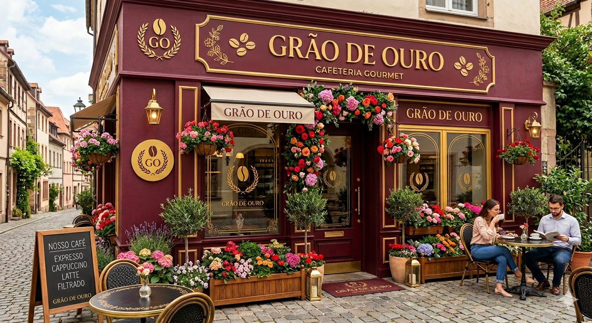

Sobre Nós
A Grão de Ouro nasceu do sonho compartilhado entre duas grandes amigas que
decidiram transformar a paixão pelo café em uma joia da hospitalidade em Chapecó. Inspiradas pela
nobreza e pela perenidade do metal precioso, elas idealizaram um espaço onde cada detalhe reflete o brilho e o acolhimento do ouro. O nome
não é apenas uma homenagem à estética reluzente, mas um compromisso com a raridade de momentos bem vividos, criando um refúgio suntuoso para
quem busca pausar a rotina com elegância.
A busca pela qualidade na cafeteria é tratada com o rigor de um mestre joalheiro.
Para as fundadoras, o café é o verdadeiro "ouro negro", e sua extração é um processo de lapidação: desde a seleção de grãos selecionados até o serviço impecável. Cada xícara entregue carrega uma pureza genuína, garantindo que as notas sensoriais sejam tão rutilantes e complexas quanto o brilho de uma pepita recém-descoberta, elevando o padrão do paladar chapecoense.
Mais do que um simples estabelecimento, a Grão de Ouro tornou-se um ponto de encontro magnífico no coração da cidade, onde a solidez da amizade se traduz em um atendimento de excelência. A cafeteria celebra o café como um elemento áureo da cultura brasileira, proporcionando uma experiência sensorial completa que une o sabor encorpado de blends exclusivos a um ambiente sofisticado. Em cada visita, os clientes descobrem que o valor de um café
perfeito é tão inalterável e precioso quanto a própria história que deu origem ao local.
Preparação do Café
Ver Cardápio CompletoLinha do Tempo
Nossa Loja
